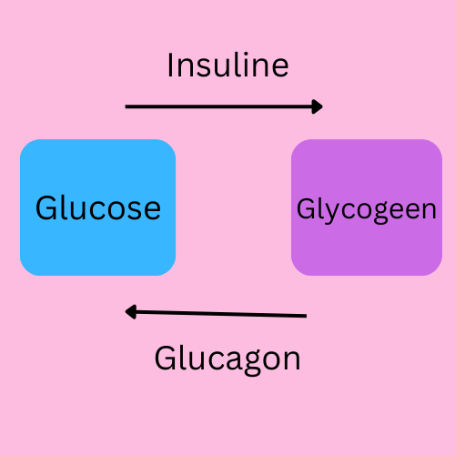

Ligging van de belangrijkste hormoonklieren:
Hormonen zijn onder andere van invloed op de stofwisseling, voortplanting, groei en ontwikkeling
Functie van hormonen:
Het verschil tussen normale klieren en hormoonklieren:
De eilandjes van Langerhans produceren insuline en glucagon
Glucose: een suiker die je lichaam gebruikt als brandstof
Insuline: zorgt ervoor dat glucose uit je bloed wordt gehaald en in je cellen wordt opgenomen als brandstof
Glycogeen: opslagvorm van glucose in je spieren
Glucagon: hormoon dat glycogeen afbreekt tot glucose
Als je niet begrijpt, kijk naar de tekening
Bijvoorbeeld, als je veel gegeten hebt, brengt insuline de glucose naar je cellen en spieren voor energie. Overtollige glucose wordt omgezet in glycogeen.
Andersom, als je lang niet gegeten hebt, zet glucagon opgeslagen glycogeen om in glucose voor energie.
Suikerziekte: als je lichaam te weinig insuline maakt, waardoor het glucosegehalte van het bloed te hoog wordt.
Glucose wordt dan uitgescheiden met de urine. Suikerpatiënten kunnen insuline inspuiten.
love u princess